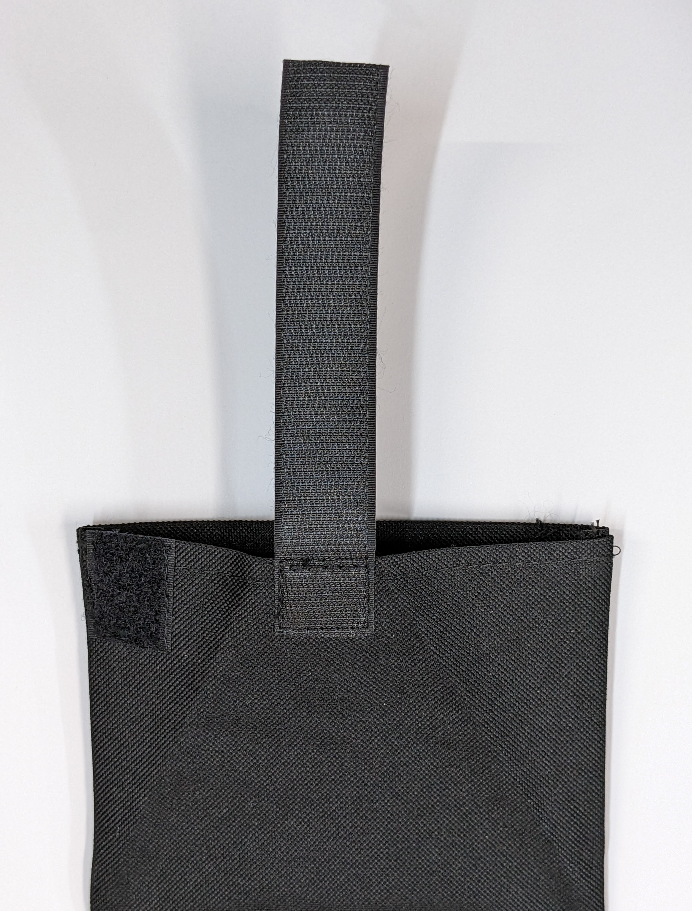

3 Phone Pouch

The phone pouch needs to be big enough to hold a large phone, but it also needs to be wide enough to accommodate a man’s hand to allow the phone to be extracted from the back. This pouch is designed for a phone 18 x 10 x 2 cm. A 30 cm circumference should accommodate most male hands.
Build the body of the water proof canvas. The prototype version of the phone pouch and backpack are made from Ottertex® Waterproof Canvas. Ottertex® is easy to mark with pencil on the back side. It is about impossible to mark on the face. I general affix blue tape to the face to when I need a mark.
3.1 Parts
Cut two panels of canvas as shown in Figure 3.1 The astute reader will note that the details of the height on the left don’t match the dimensions on the right. Whatever! Until proven otherwise, cut the fabric 37 cm high, mark the seam of for the mesh 11 cm above the unfinished bottom, and mark the folder line 13 cm below the unfinished top.
Also cut these small parts from sewable 2.5 cm-wide hook-and-loop closure strips
Dirt-out closure: a matched pair of strips 14 cm long
Tri-fold closure: a matched pair of strips 3 cm long
Flap closure: one fuzzy strip 9 cm long, one hooked strip 14 cm long
Also cut these parts
Dirt-out flap: cut a single 8 x 14 cm panel from ripstop nylon
Mesh floor: cut 2 panels 11 x 14 cm from any durable mesh fabric
3.2 Assembly
3.2.1 Both panels
- Mark a stitch line on the backside of each pouch panel 11 cm up from the bottom of the unfinished edge.
- From a 1 cm square from each corner of each pouch panel.
- Fold and stitch a 1 cm hem on all four edges of the each pouch panel.
- Sew a mesh panel to the backside of each pouch panel along the aforementioned stitch line. Trim the excess mesh from the left and right edges.
3.2.2 Bottom panel
- Align the 8 x 14 cm nylon dirt-out panel to one long edge of a 14cm strip of hook-and-loop. Overlap the panels about 5mm. Lightly tack the pieces together.
- Align to the other edge of the hook-and-loop with the lower hem, centering the hook-and-loop on the pouch panel. Stitch all edges of the hook-and-loop.
- At the center of the top edge, on the face, overlap about 2 cm of the 14 cm long hook strip on top of the face. Orient the hook strip hook-side down. Stitch all four edges of the 2 cm over overlap. See Figure 3.2
- Orient the bottom panel face up, and top edge up. On the top left corner, orient a 3cm loop strip vertically, fuzzy side out. Stitch all four edges to the loop strip. See Figure 3.2

3.2.3 Top panel
- Align a 14 cm piece of loop strip with the lower hem, centering the loop strip on the pouch panel. Stitch all edges of the loop strip.
- Orient the top panel face up, top up. At the top left corner of the panel, orient the 3 cm hook strip, hook side up as shown in Figure 3.3 Stitch all four edges of the loop strip.
- Orient the top panel face up, top up. At the bottom center of the panel, orient the 9 cm loop strip vertically, fuzzy side up, with one end aligned with the bottom edge. Stitch all four edges of the loop strip.
3.2.4 Assemble the panels
- Align the backsides of the pouch panels
- On the left and right edges, stitch from the top edge the mesh seam line.
- Fold the pouch panels back to expose the two mesh panels.
- If needed, apply a 6cm strip of blue tape the mesh to stabilize its shape.
- Mark a curving line on the mesh/blue tape as shown in Figure 3.5 the bottom of the line should be about 6 cm below the stitch line that joins the mesh to the pouch panel.
- Stitch along the marked line.
- Peel away the blue tape from both side of the stitch line.
- Trim off the excess mesh beyond the stitch line.
- Triple-zig-zag stitch the remaining hem of mesh.
- Fold the front and back pouch panels together again.
- Stitch each side from the top of the mesh to the bottom to fully close the sides.
Most of the details of the construction are visible in the completed phone pouch shown in Figure 3.6
Mark the flap closure’s fold line 12 cm below the upper finished edge of the pouch. Crease this line with a warm iron. Fold each corner of the flap closure and crease it with a warm iron as shown in Figure 3.6 The hook-and-loop tabs should align when the corners are folded.